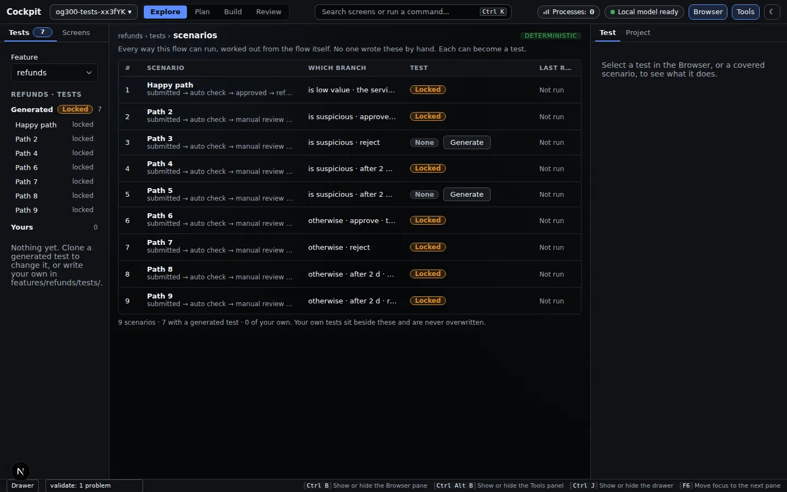
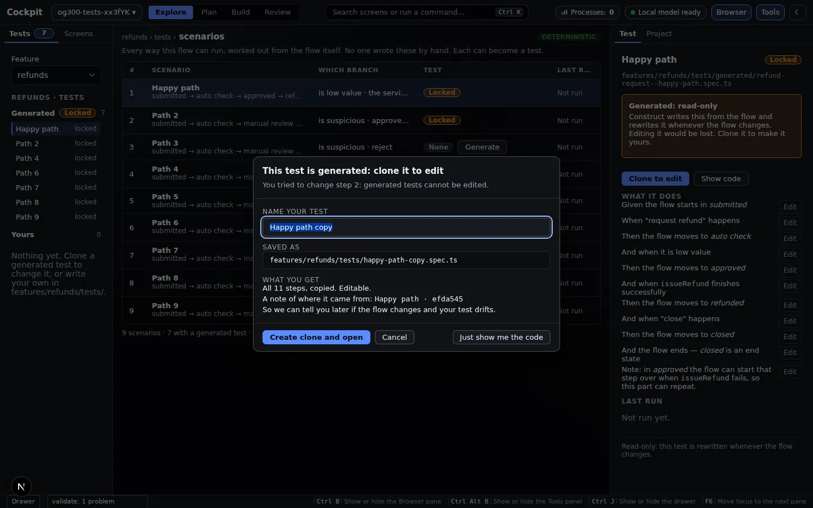
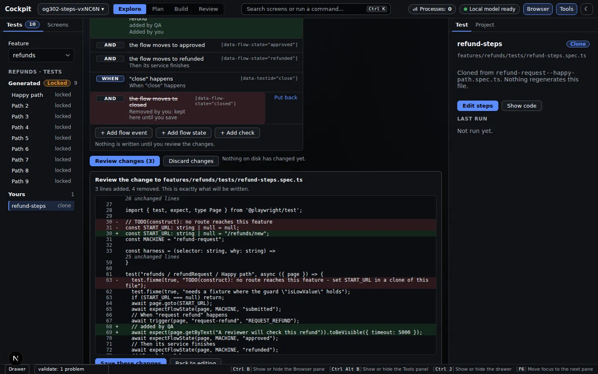

Cockpit
Tests: coverage, clone, step editor
Locked generated tests, cloning, and editing a test as steps.
Problem. Tests for a workflow are written once and drift. Nobody can say which routes through the flow are covered. And a generated test that a person edits by hand is overwritten by the next regeneration, or worse, silently diverges from the flow it claims to test.
The Tests screen (under Explore) lists every route through a feature's workflow, worked out from the flow itself, and whether each has a test. Generated tests are locked. To change one you clone it, and the clone is yours and nothing regenerates it. It keeps a record of the scenario it came from.
This page shows the Cockpit only. Generating the tests from a terminal is in the CLI examples; the engine is in the Core examples.
Do this#
1. Coverage: every route, tested or not#
Pick a feature. The table has one row per route through its workflow, with the branch it takes, whether a locked generated test exists (Locked) or not (None, with a Generate button), and its last run. The Browser pane splits tests into Generated (locked) and Yours.

2. Editing a locked test means cloning it#
Try to edit a generated test and a dialog explains why it is locked and offers a clone. The copy lands in your area of the feature's tests, is never overwritten, and keeps a record of which scenario it came from.

3. Edit the clone as steps, review the diff, save#
Select one of your tests and press Edit steps. It opens as a list of Given / And / When / Then / Check rows, each showing the selector it binds to. A form edits the selected row using pick-lists of the flow's real events and real states. Add a flow event, a flow state or a check; remove a step (it stays struck through until you save); reorder with buttons.
Review changes shows the exact diff of the file. Save these changes writes exactly that and nothing else.

Safety and honesty rules the editor keeps:
- A file is offered for editing only if it survives a round trip byte for byte. Anything else (a hand-written statement, an extra comment) is shown read-only with the reason, and never touched.
- Field values are checked against what the flow really has: an event must be one of its events, a state one of its states, a URL a path on the same site.
- A file that changed since you opened it is refused rather than overwritten.
- Today's steps are: go to a page, flow event, flow state, and a "text is visible" check. Click, type and wait steps are not offered yet, and free-form code editing and recording are not built.
You get#
| You get | Evidence above |
|---|---|
| Coverage worked out from the flow, not from memory | step 1: 9 scenarios, 7 covered |
| Generated tests that cannot be edited by accident | Locked badge and clone dialog |
| Edits you can review before they land | the diff in step 3 |
Why it matters#
You can see which routes are untested, and edit a test without the next run overwriting your work.
Checked against commit 081150b on 2026-09-20 (wording revised for plain language on the same day). Screenshots come from the project's own Playwright runs of these screens.